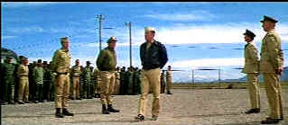

| Devil's Brigade/ B, D+ |
| MGM/1968/131/WS 2.35 |
William Holden is the mortar around which The
Devil's Brigade is built. Holden, virtually always a strong
presence in his films, delivers once again as Lt. Colonel Robert
Frederick. He's got the wait of authority and belief in himself as the
determined commanding officer of the newly formed hybrid unit of Americans
and Canadians.
Frederick is one tough man. He doesn't give
ground to anyone for anything. He's a leader to admire. The colonel not
only has to deal with the tension building amongst his men, but the brass
throws him a curve or two. Frederick never flinches, though more than once
his ability is questioned because he has no combat experience.
 |
|
Gentlemen, meets the
Canadians. ©MGM
|
The first section of the film features a standard
treatment of putting together and training a new unit. There's competition
between the Americans and Canadians. There's bonding between the men. When
the brigade is sent to Italy there's one very entertaining attack that
plays equally for laughs and tension; and a second attack designed to
perfection with a dramatically big scope.
Director Andrew V. McLaglen gives the action a
rousing treatment. there are some enjoyable fights and a smattering of
barracks humor. The varied character each do their part to add color to
the production.
Holden is joined by Cliff Robertson as the
Canadian commander, Vince Edwards as the street tough American Major, and
host of familiar supporting players like Richard Jaeckel, Claude Akins,
Harry Carey, Jr. and Carroll O'Connor.
Unfortunately, The Devil's Brigade is bedeviled
by unsightly twittering edge artifacts in a majority of the scenes. It's
either a lack of intelligent filtering or the master is perhaps composite.
Mine is not to reason why, mine is but to buy and sigh. The transfer is
surely sharp enough and color saturation is decent. The elements are
pretty clean with a few errant marks here and there. A few scenes are
slightly soft.
If you can avoid the minefield of edge artifacts, The
Devil's Brigade is a solid war action flick. |
|
|
|

Selections from the Feature
Archive include articles on Akira Kurosawa, Blonde Bimbos, Frank Darabont, Steven Culp, John Herzfeld or Vietnam: The Hollywood Pariah, and many
more....
Vietnam: The Hollywood Pariah

During World War II, Hollywood pumped out war movies one after the other.
Vietnam was was another story. As far as Hollywood was concerned it was a
pariah.

 Have you visited
Home Theater
Talk lately? One of the friendliest places on the Net for Home
Theater and DVD discussion, you can get help for installation problems or
simply share your opinions with other Vidiots. Have you visited
Home Theater
Talk lately? One of the friendliest places on the Net for Home
Theater and DVD discussion, you can get help for installation problems or
simply share your opinions with other Vidiots.

Excellent British based DVD review site that features Region 2 and
Region 1 releases. Check out their fine interviews as well.

ISF Monitor
Calibrations in the Tristate New York area. Lots of hardware
info and frequent hardware peaks from video expert Kevin Miller. They may
be judgmental, but that's the point, isn't it. Lots of DVD reviews plus
news and more.
|